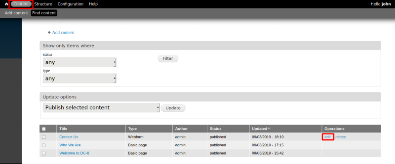
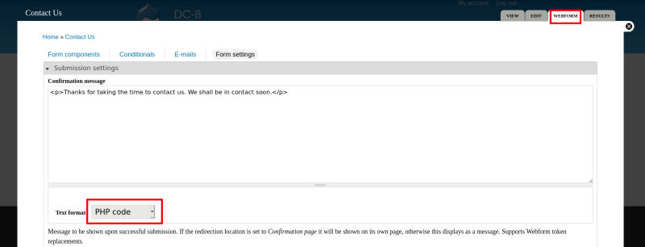

Kali Linux has inbuilt PHP Scripts for utilizing them as a backdoor to assist Pen-testing work. They are stored inside “/usr/share/webshells/php” and a pen-tester can directory make use of them without wasting time in writing PHP code for the malicious script.
a) Go to Content and edit “Contact us” section.

b) Choose the “Webform” tab.
Choose “PHP Code” in the “Text format” dropdown.

c) Look for a malicious PHP code.
PHP-reverse shell
It's a shellwhich will open an outbound TCP connection from the webserver to a host . A shell will be attached to the TCP connection (reverse TCP connection). You can run interactive programs such as telnet, ssh etc with this script. It is different from the other Web shells script, through which you can send a single command and then return the output.
The file is ¨/usr/share/webshells/php/php-reverse-shell.php¨.